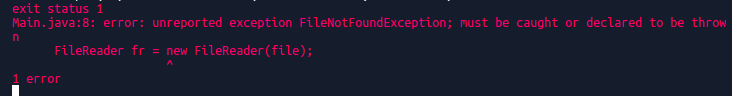

Java uses classes to describe exceptions and errors. These classes are organized into a hierarchy that's rooted in the java.lang.Throwable class. (The reason why Throwable was chosen to name this special class will become apparent shortly.) Directly underneath Throwable are the java.lang.Exception and java.lang.Error classes, which describe exceptions and errors, respectively.

Errors - Errors are serious problems that a reasonable application should not try to catch. An example of an error would be an infinite loop or a stack overflow error caused by infinite recursion.
Consider the following examples,
class InfiniteLoop {
public static void test()
{
for(int i = 1; i > 0; i++){
System.out.println(i);
}
}
}
class StackOverflow {
public static void test(int i)
{
// Not correct as base condition leads to
// non-stop recursion.
if (i == 0)
return;
else {
test(i++);
}
}
}Exceptions can be divided into two main categories.
Checked exceptions − A checked exception is an exception that is checked (notified) by the compiler at compilation-time. Checked exceptions, check for errors that are typically out of the programmers control, such as an IOException. Java is extra vigilant and checks for such errors for you, and requires you to handle them before compilation.
Below is an example
If you try to compile the above program, you get the following exceptions,
There are two ways to solve this problem.
- Add throws clause OR
- Add Try, Catch blocks to your code
Below is a revised version of our code which handles these exceptions using the throws clause.
Below is a revised version of our code which handles these exceptions using try-catch blocks.
Unchecked exceptions - An unchecked Exception in Java is an exception whose handling is NOT verified during Compile time. The program won’t give a compilation error. These exceptions occur because of bad programming. All Unchecked exceptions are direct sub classes of RuntimeException class.
Examples of unchecked exceptions include
- NullPointerException
- ArrayIndexOutOfBoundsException
- IndexOutOfBoundsException
- IllegalArgumentException
- ArithmeticException
- ClassCastException
Below is an example of an ArrayIndexOutOfBounds exception
Unlike a checked exception, this error went undetected (unchecked) by the compiler. To check for the possibility of going out of bounds a try-catch block can be used